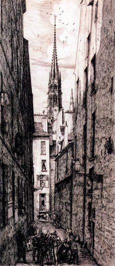

Интересное
Содержание
О дальтонизме
Дальтонизм — это наследственная, реже приобретённая, особенность зрения, выражающаяся в сниженной способности или полной неспособности видеть или различать все или некоторые цвета. Чаще всего дальтонизм наблюдается у мужчин.
Эта особенность названа так в честь Джона Дальтона, который впервые описал один из видов цветовой слепоты на основании собственных ощущений в 1794 году.
Причины дальтонизма
Чаще всего это врожденная особенность, обусловлена она тем, что на сетчатке повреждены цветочувствительные рецепторы — колбочки. В них находится свой тип пигмента — красный, зеленый, синий. Если пигмента достаточное количество, то цветовосприятие у человека нормальное. Если же имеется его нехватка, то возникает тот или иной вид цветовой слепоты — в зависимости от того, какого пигмента не хватает.
Дальтонизм бывает врожденным и приобретенным.
Врожденный передается по материнской линии через Х-хромосому. У женщин поврежденная одна Х-хромосома может быть компенсирована целостной второй, а у мужчин такой компенсаторной возможности нет. Поэтому у них эта особенность встречается чаще, чем у женщин. У женщин же дальтонизм может возникнуть, если он имеется у отца, а мать — носитель мутированного гена. Также ребенку может передаться.
По статистике, тот или иной вид дальтонизма существует у каждого десятого мужчины и у 3-4 женщин из 1000.
Приобретенный возникает вследствие возрастных изменений, приема некоторых медикаментов, либо из-за травмы сетчатки или глазного нерва, ожог сетчатки ультрафиолетом. Встречается он у женщин и мужчин примерно одинаково. При таком виде у людей чаще всего возникают сложности в восприятии желтого и синего цвета.
Виды дальтонизма
У людей с нормальным цветовосприятием часто возникает вопрос — как дальтоники видят цвета, каким перед ними предстает мир. Все зависит от того, какой именно вид дальтонизма есть у человека. Иногда его мир так же полон красок, но не воспринимается только один спектр цвета, либо его видение искажено до неузнаваемости.
В зависимости от того, какой пигмент отсутствует, возникают разные нарушения цветовосприятия, при которых человек не может различать тот или иной цвет.
Ахромазия и монохромазия
Если же в колбочках вообще нет пигмента всех цветов, глаз видит только оттенки черного и белого, а цветного зрения нет вообще. Это самая редкая форма дальтонизма. Человек различает цвета только по их яркости и насыщенности. Иллюстрацией этого восприятия может быть черно-белая фотография либо старые черно-белые фильмы.
Также бывает и монохромазия — пигмент присутствует только в одной из колбочек. Это такая форма дальтонизма, при которой все цвета воспринимаются как один цветовой фон, чаще всего красный. В таком случае человек видит намного больше оттенков этого цвета, чем при обычном зрении — это компенсаторная функция мозга. Примером также могут служить старые фотографии, для проявления которых в реактивы добавляли какую-то краску. Тогда человек днем не воспринимает и серые оттенки, они видятся в той же цветовой гамме, которая присутствует в колбочке.
Дихромазия
При этой патологии человек в дневное время различает два цвета. Также эта патология делится на подвиды
Протанопия
Когда не различают красный цвет, и все оттенки в данной цветовой гамме. Называется патология протанопия.
Эта ситуация чревата опасностью для человека на дороге — он попросту может не разобраться в сигналах светофора. Эта патология встречается чаще всего, и вместо красного глаз воспринимает цвет, приближающийся к желтому. При этом желтый так желтым и остается. Иногда глаз вместо красного видит серый цвет, как было у самого Дальтона — ему объяснили, что его любимый темно-серый пиджак на самом деле был бордового цвета.
Дейтераномалия
Когда не различают зеленый цвет. Называется такая патология дейтераномалия.

Такая патология достаточно редко встречается, чаще всего ее обнаруживают случайно. Мир для человека с дейтеранопией выглядит для нормального цветовосприятия необычно — зеленые тона смешиваются с красными и оранжевыми, а красный цвет — с зеленым и коричневым. Поэтому красный закат в его восприятии выглядит синим, зеленые листья также кажутся синими либо темно-коричневыми.
Тританопия
Когда не различают синий цвет. Такая патология называется тританопия.
Это наиболее редко встречающаяся патология, при которой человек не может отличать цвета в сине-желтой и фиолетово-красной гамме. При этом синий и желтый цвета выглядят одинаково, а фиолетовый идентичен красному. Однако большинство людей отличают пурпурные оттенки от зеленых. Эта патология чаще всего является врожденной. При этом виде дальтонизма у человека чаще всего еще и ослаблено сумеречное зрение. Но в остальном глаз здоров, острота зрения не нарушена.
Аномальная трихромазия
Когда у человека в колбочках хватает всех пигментов, то состояние цветовосприятия называется трихромазия, при этом дальтонизма у него нет, и в этом отношении зрение у него здоровое.
Существует и нарушение, когда равномерно не хватает всех пигментов — тогда цвета для дальтоников остаются в приглушенных тонах, не такими яркими и насыщенными, а некоторые оттенки для него становятся недоступными. Это также достаточно редкий вид дальтонизма. Недавние исследования показали, что примерно так видят окружающий мир собаки.
Люди, с нарушением восприятия красного и зеленого, способны воспринимать много оттенков цвета хаки, которые при нормальном цветовосприятии кажутся одинаковым серым.
Цианопсия
Это патология, при которой человек всё видит в синих тонах.
Это очень редко встречающаяся патология, всегда приобретенная. Возникает она при травме глаза, чаще всего после удаления хрусталика, поэтому на сетчатку попадает много коротких световых лучей. Это сильно затрудняет восприятию красного и зеленого оттенков. Возникнуть оно может и при воспалительных явлениях на сетчатке глаза. Случается, что и такое цветовосприятие у человека снижено, да и острота зрения невысокая.
Хлоропсия
Это похожее заболевание, также всегда приобретенное.
При этом заболевании глаз теряет возможность видеть цвета красного и синего спектра, воспринимается только зеленая. Возникает она при различных органических отравлениях организма, при дистрофических и воспалительных явлениях в сетчатке глаза. При этом состояние человека может усугубляться, восприятие зеленых оттенков также сужаться, падать острота зрения, может возникнуть непереносимость яркого освещения.
Подвержены ей в основном мужчины.
Эритропсия
Также существует такое временное и быстропроходящее состояние, как эритропсия — при ней человек все видит в красной цветовой гамме.
При этом белый цвет воспринимается как желтоватый. Возникает это состояние после операций на глазах, при «снежной» слепоте у лыжников и альпинистов — его еще знают как «снежную слепоту», при воздействии ультрафиолета на роговицу (например, при кварцевании помещения). Оно быстро проходит само собой, лечения не требуется. Если же такое зрение за пару дней не прошло, надо обратиться к офтальмологу и несколько дней поносить хорошие солнцезащитные очки.
Художники-дальтоники
Возможность того, что среди художников были и есть дальтоники, обусловлена простым логическим рассуждением – поскольку это нарушение зрения встречается достаточно часто, то можно предположить, что некоторые из людей с нарушением цветовосприятия оказывались художниками, указывает в своей книге «An eye for painting» («Глаз для рисования») Филипп Лантони. И это предположение подтверждается как сведениями из истории живописи, так и исследованиями. При диагностике зрения 342 художников из Дрездена, проведенной в 1978 году немецким офтальмологом Вольфгангом Мюнховым (Wolfgang Munchow), обнаружено, что 31 обследуемый имел цветовую слепоту, причем 17 из них отказались от цветной живописи и перешли к графике. Количество дальтоников среди представленной выборки художников составило 9%, что практически совпадает со средним числом случаев дальтонизма в популяции – 8% среди мужского населения стран Европы.
В истории искусств имеются упоминания о наличии дефектов цветовосприятия у художников. Так, известен рассказ Джорджио Вазари о флорентийском художнике Баччио Бандинелли (Baccio Bandinelli, 1493–1560): Баччио нарисовал картон «Снятие с креста» и начал его раскрашивать… Микеланджело пришел посмотреть на его работу и был поражен, так как черно- белые рисунки Баччио были очень красивы, но цвета для картины были подобраны очень грубо. В дальнейшем Баччио Бандинелли отказался от применения цветных красок и нанимал молодого художника, который очень хорошо распознавал и использовал цвета. Похожую историю рассказывал аббат Ланци о венецианском художнике Николо Бамбини (Nicolo Bambini, 1651–1736): он хорошо знал о своих недостатках при подборе цветов, поэтому запрещал своим ученикам копировать собственные работы. Для придания большей яркости своим картинам Бамбини нанимал генуэзского художника Кассану (Cassana).
Но наиболее известным художником-дальтоником является француз Шарль Мерион (Charles Meryon, 1821–1868). Он был морским офицером и плавал по всему свету на корвете «Рейн». Под впечатлением удивительной красоты пейзажей островов Океании и Новой Зеландии Мерион начал рисовать. В 25 лет он оставил флот и решил посвятить себя живописи. Мерион знал о своем дефекте восприятия цветов и неоднократно упоминал о нем в письмах друзьям и родным. Так, в письме к Фоли (Foley) художник пишет: «У меня определенно имеется дефект в организации зрения, проявляющийся в том, что я путаю цвета, которые хорошо различают все, в особенности желтый и красный». В письме отцу Мерион также рассказывает о проблемах с цветовосприятием: «Я только что начал писать акварелью и доволен прогрессом, хотя у меня имеется какой-то внутренний дефект зрения, который заставляет меня путать некоторые цвета, особенно если они разбавлены. Надеюсь, что привычка и практика помогут мне избавиться от этого порока». Испытывая трудности с различением красного и желтого цветов, художник пытается обойти свой недостаток, напирая на синие и желтые цвета, а потом уходит из живописи, сначала в рисунок, а потом в гравюру. Его офортами с видами Парижа восхищались Гюго, Бодлер, Ван Гог и многие другие... «Мой дефект зрения таков, что я предпочитаю красоты черно- белых гравюр с их градацией серого ярким краскам живописных полотен», – признавался художник.
Многие исследователи отмечают сумрачный осенний колорит пейзажей известного английского художника Джона Констебля (John Constable, 1776–1837). В своей книге Филипп Лантони приводит слова некоего Фуселли: «Где мое теплое пальто? Я собираюсь смотреть картины мистера Констебля». Офтальмолог Морли высказывает мнение, что Констебль был дальтоником, а преобладание оттенков коричневого и желтого в работах художника обусловлено его плохим восприятием синего и голубого.
На полотнах Винсента Ван Гога много желтого цвета. Специалисты утверждают, что такое пристрастие к желтому цвету, который появляется кстати и некстати, объяснялось тем, что Ван Гог нечетко различал цвета – был дальтоником.
Все исследователи творчества гениального русского художника Михаила Александровича Врубеля (1856–1910) обращают внимание на то, что он работал в серо-жемчужной гамме. Художник то создает нежные перламутровые цветосочетания, как на картине «Царевна- Лебедь» (1900), то погружается в таинственные сочетания светлой зелени и лиловых цветов, как на картине «Сирень» (1900), то выполняет работу в сдержанной серо-охристой гамме, как на картине «Пан» (1899). Отсутствие в его палитре ярких оттенков красного и зеленого психологи долгое время объясняли мрачным складом характера живописца. Более внимательно проанализировав цветовой состав картин Врубеля, ученые пришли к выводу, что дело не в пессимизме, а в дальтонизме, хотя некоторые считают это утверждение спорным.
В качестве примеров приобретенного дальтонизма, возникшего из-за возрастных изменений или болезней, нередко приводят творчество позднего периода таких живописцев, как Репин и Саврасов. Известно, что гениальный русский художник Илья Ефимович Репин (1844–1930) уже в преклонном возрасте попытался отреставрировать свою картину «Иван Грозный и сын его Иван 16 ноября 1581 года» (1885). Однако окружающие обнаружили, что из-за нарушения цветового зрения Репин сильно исказил цветовую гамму собственной картины, и его работу пришлось прервать. Реставрация потребовалась из-за того, что в январе 1913 года в Третьяковской галерее молодой человек Абрам Балашов, по профессии иконописец, из старообрядцев, изрезал ножом это полотно. Из трех ударов один пришелся на лицо Грозного – от середины виска, пересекая ухо, до плеча, второй разрез прошел по контуру носа царевича, задев щеку Грозного и уничтожив весь очерк носа царевича, третий – повредил пальцы правой руки царевича, разрезал щеку у него и задел правый рукав Грозного. Приехав в Москву 17 января, Репин немедленно пошел в Третьяковскую галерею и сам заново переписал голову Ивана Грозного. Вот что рассказывает Игорь Грабарь, назначенный в это время попечителем Третьяковской галереи: «Когда я вошел в комнату, где была заперта картина, и увидел ее, я глазам своим не поверил: голова Грозного была совершенно новая, только что свеже написанная сверху донизу в какой-то неприятной лиловой гамме, до ужаса не вязавшейся с остальной гаммой картины. Медлить было нельзя – краски могли к утру значительно затвердеть. Узнав, что Репин писал на керосине – он давно уже заменил им скипидар прежнего времени, – я тут же сначала насухо, потом с керосином протер ватой все прописанные места, пока от утренней живописи не осталось и следа и полностью засияла живопись 1884 года... Мы с Д. Ф. Богословским остановились... именно на восстановлении при посредстве акварельных красок, что и произвели в течение недели. Восстановить его удалось только благодаря наличию превосходных фотографий с деталей, снятых до поранения и увеличенных до размеров оригинала».
Отец русского пейзажа Кондратий Артемьевич Саврасов (1830–1897), автор знаменитой картины «Грачи прилетели» (1871), переболев тяжелым инфекционным заболеванием, под конец жизни перестал различать цвета и последние свои творения писал по воспоминаниям.
Из современных российских художников дальтоником является Виктор Александрович Чижиков (родился 26 сентября 1935 года в Москве) – народный художник России, многолетний иллюстратор журналов «Вокруг света» и «Мурзилка», автор талисмана XXII летних Олимпийских игр в 1980 году – медвежонка Мишки. Его коллега Леонид Сергеев пишет: «Чижиков – неиссякаемый на выдумки рисовальщик юморист и уникальный, единственный в своем роде, художник – он дальтоник (ему жена под красками обозначала цвета), но он годами боролся со своим недугом и в конце концов победил – научился чувствовать цвет»